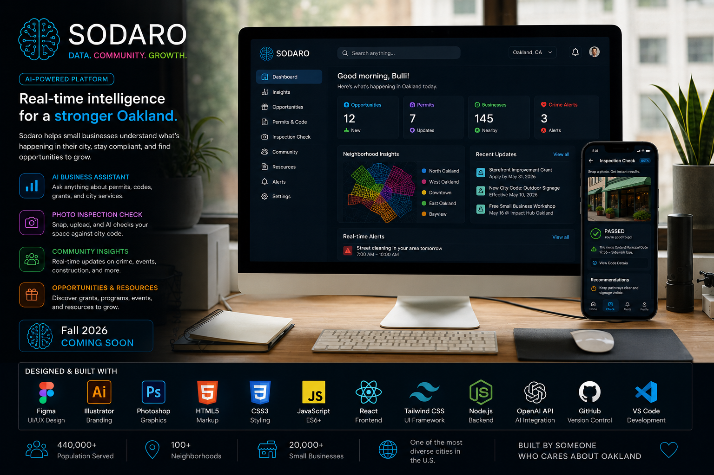
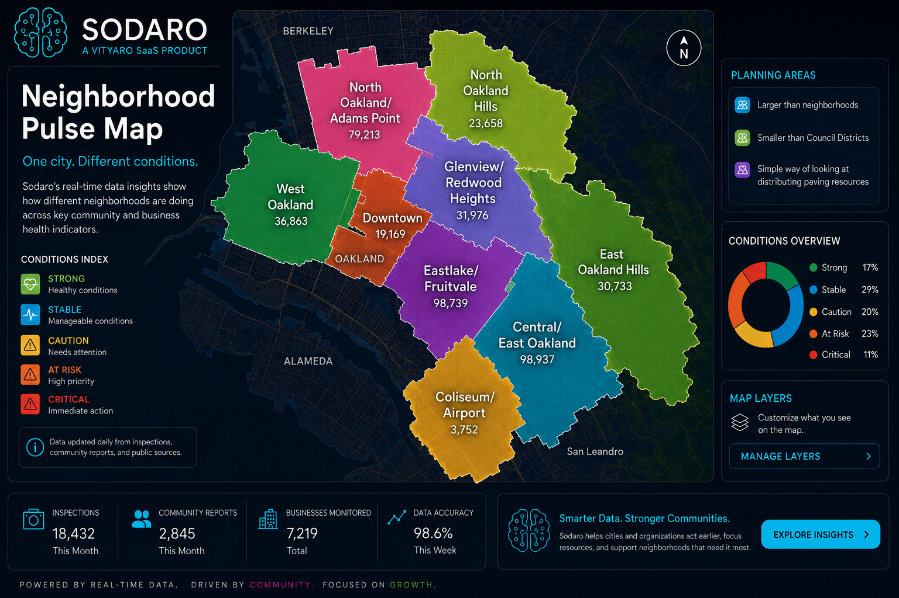
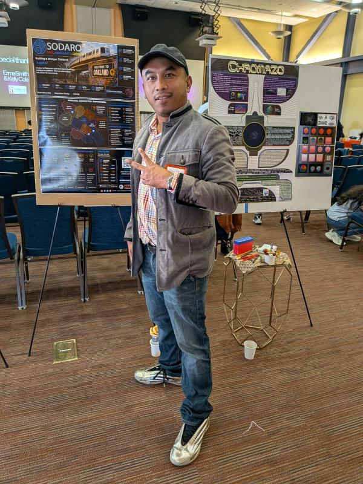

A Vityaro Product · Solo Graduate Thesis · Interaction Design · UX/UI
Vityaro Private Parent Company→Sodaro SaaS Platform / Product
See what is happening.
Understand why.
Know what to do next.
Sodaro is an AI-powered concept for Oakland businesses and nonprofit organizations. It turns city conditions, community activity, construction, crime alerts, permits, grants, and local opportunities into simple actions.
DataCommunityGrowthOpportunity

Move your cursor or tap the scene
Interactive SaaS teaser
Organization status demo
Switch between a business or nonprofit, choose the organization type, then test the current condition.
Good afternoon, BulliCafe · Downtown Oakland
Live
Business isNORMAL
Keep your regular hours and promote today's best seller.
Maintain stable sales and prepare for the evening rush.
Visitors84
Sales$612
New customers9
Foot trafficNormal
New feature concept
Photo Inspection Check
Upload or take a storefront photo to preview how Sodaro could explain visible code concerns before an official inspection.
01
Upload a photo
The demo will simulate a visual review and connect findings to example city-code guidance.
Analyzing visible conditions
Checking access, signage, sidewalk clearance, and outdoor setup...
87
Inspection readinessReview recommended
City-code update
Outdoor display and sign requirements were recently updated. Review details before your inspection.
Thesis prototype only. Results are simulated guidance and not an official inspection decision.
City awareness
Crime, construction, and community alerts
Click a card to see how one local condition changes the recommendation for a business or nonprofit organization.
Selected insight
Choose an alert above.
Sodaro connects local conditions to plain-language recommendations.
UX & UI case study
Designed around real Oakland decisions.
Sodaro turns neighborhood conditions into a clear path from awareness to action. The experience is built for small-business owners, nonprofit leaders, temple and community organizers, immigrant families, elderly residents, and people who are not technical.

Research
Field observation, local business pain points, neighborhood change, and civic-information gaps.
Structure
Dashboard hierarchy, clear navigation, plain-language alerts, and reusable information cards.
Interaction
See the condition, understand the cause, receive a suggestion, and take the next step.
Validation
Usability testing, cognitive walkthroughs, observation, and iterative Figma revisions.
Neighborhood Pulse Map
One city. Different conditions.
Move across Oakland to see what is happening around each neighborhood. Filter the map by condition, hover over hotspots, or choose a district to surface a live-style community snapshot.
LIVE NEIGHBORHOOD VIEW
Explore Oakland
Hover over a marker or select a neighborhood to see what is changing and why it matters.
72Pulse score
18Active signals
342Organizations

StrongStableCautionAt riskCritical
LIVE SIGNALS
Lake Merritt event traffic rising · Downtown permit activity updated · Fruitvale transit flow changing
Design system
Clear, consistent, and built to scale.
Interaction design thesis
From confusion to action.
The core journey is simple: see the current status, understand the cause, receive a clear suggestion, and take action. Sodaro is designed for business owners and nonprofit leaders who do not have time to study complicated dashboards.
- 1See Slow, Normal, or Busy
- 2Understand the real-world cause
- 3Receive a practical recommendation
- 4Take action with confidence

Innovation Festival2026
About Sodaro
Research first. Built from Oakland.
Sodaro was created for my solo graduate thesis, but I am also exploring how it could grow into a real SaaS platform after my graduate program. I plan to keep investing my time into the idea, test it with people, and see where it can go.
The project is based on real interviews, real research, public information, and the data I can access today. The goal is not only to support small businesses. Sodaro also focuses on nonprofit organizations that need a simple way to understand what is happening around them.
I believe useful city data should be easier to understand. Instead of making people search through spreadsheets and many government websites, Sodaro explores how AI, public data, and computer vision can bring the information together and turn it into simple, actionable insights.
“Sodaro brings all of that together in one platform. We combine AI, public data, and computer vision to give entrepreneurs simple, actionable insights instead of overwhelming them with spreadsheets and government websites.”